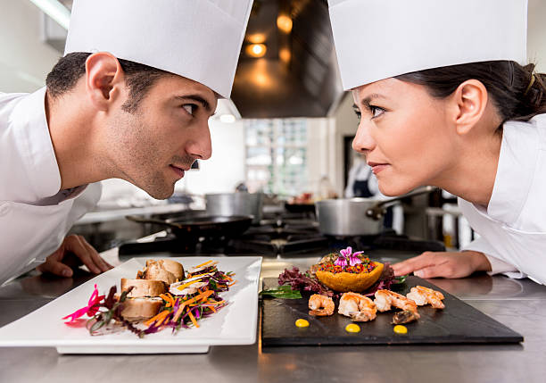

Les mares i les àvies de moltes famílies espanyoles van començar a utilitzar la carn sobrant del cap d'any o del Nadal per fer els canelons casolans, i des de llavors s'han convertit en una tradició que s'ha transmès de generació en generació. Avui en dia, moltes famílies espanyoles segueixen fent els seus propis canelons casolans durant les festes de Nadal, i cada família té la seva pròpia versió de la recepta, que passa de pares a fills.
Els canelons casolans són una part important de la cultura espanyola i una representació de la passió i l'amor que les persones posen en la seva cuina. I encara que la història dels canelons casolans pot variar d'una família a una altra, totes les històries tenen en comú la importància de la tradició i la connexió emocional que es pot crear a través de la cuina.
CONCURS DE CUINA
CONCURS DE CUINA

T'agrada cuinar i passar-ho bé? Aquí tenim el concurs de cuina més esperat
de la temporada. Tot tipus de plats i formes
- 500 g de carn picada
- 1 ceba gran picada
- 2 dents d'all picades
- 750 ml de llet
- 200 g de farina de blat
Preparació
1. En un bol gran, barreja la farina amb els ous i una mica de sal fins que quedi ben amalgamat.
2. A poc a poc, afegiu aigua mentre barregeu la massa fins que es formi una bola de pasta.
3. Si la pasta queda massa seca, podeu afegir més aigua; si és massa líquida, podeu afegir més farina.
4. Deixeu reposar la pasta durant 30 minuts, coberta amb un drap humit.
5. En una paella gran, sofregiu la ceba i l'all amb oli d'oliva fins que estiguin ben tendres.
6. Deixeu bullir durant uns 5 minuts fins que la salsa s'hagi espessit.